Classroom / original desks
front_split
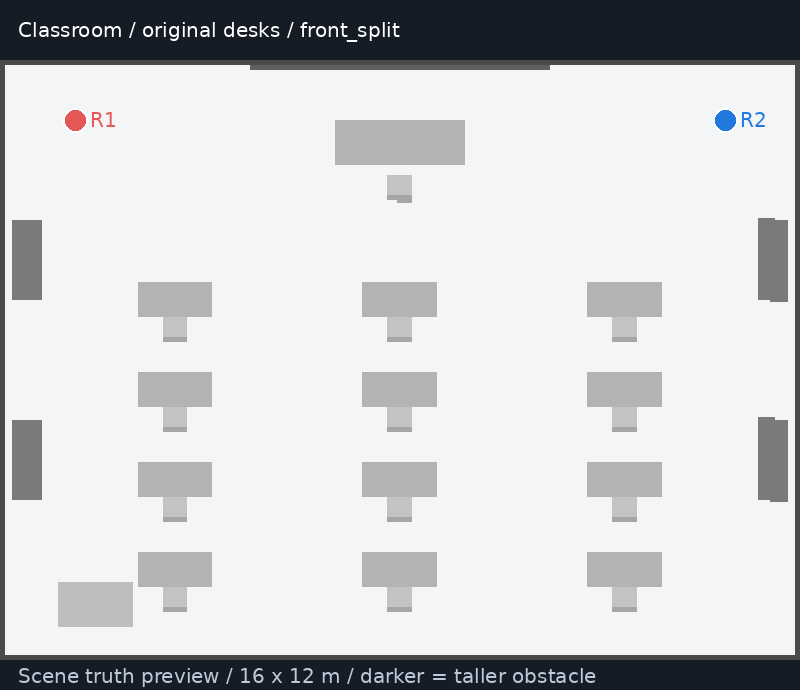
未知减少 95.59% · 剩余 152,270
规划均值 / P95：0.534 / 0.759 s
启动后空闲 R1 / R2：0.00 / 0.00 s
采样最小车距：3.14 m · duration_limit
6 类场景 × 3 组出生点；已完成 18 / 18。每组最多 160 秒，5 cm 体素、5 m / 64×1024 / 10 Hz 雷达。
未知减少比例以首次扫描后的未知为分母，不等于可观测空间完成率。布局图是真值预览，视频只显示实测信息。这是带已知二维通行先验的离线回放；计算实测耗时计入仿真，尚未验证真车。每组仅一次运行，耗时不作为严格速度对照。当前算法未实现双车轨迹避碰，采样最小车距用于发现近距离交汇。
本批出生点影响最明显的布局：multiroom。首次记录到未知减少 90% 的时间为 79.9–148.7 秒；最慢为 multiroom__rear_together。这是推进效率差异，不能据此认定存在任务遗漏。
同一布局的三组出生点；规划均值为三次均值的平均。P95、空闲取最差的一组，车距取最小采样值。
| 布局 | 核验通过 | 未知减少范围 | 规划均值 s | 最差 P95 s | 最长累计启动后空闲 s | 最小采样车距 m |
|---|---|---|---|---|---|---|
| classroom | 3 | 95.56–96.14% | 0.552 | 0.847 | 0.00 | 1.30 |
| office | 3 | 95.68–96.16% | 0.510 | 0.657 | 0.00 | 1.30 |
| meeting | 3 | 95.69–96.55% | 0.540 | 0.711 | 0.00 | 1.30 |
| library | 3 | 92.67–93.13% | 0.512 | 0.630 | 0.00 | 1.30 |
| laboratory | 3 | 94.92–95.27% | 0.475 | 0.635 | 0.00 | 1.30 |
| multiroom | 3 | 91.83–94.40% | 0.484 | 0.596 | 0.00 | 1.30 |
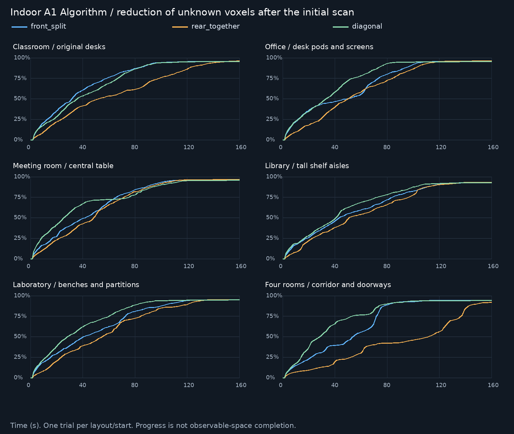
front_split

未知减少 95.59% · 剩余 152,270
规划均值 / P95：0.534 / 0.759 s
启动后空闲 R1 / R2：0.00 / 0.00 s
采样最小车距：3.14 m · duration_limit
rear_together
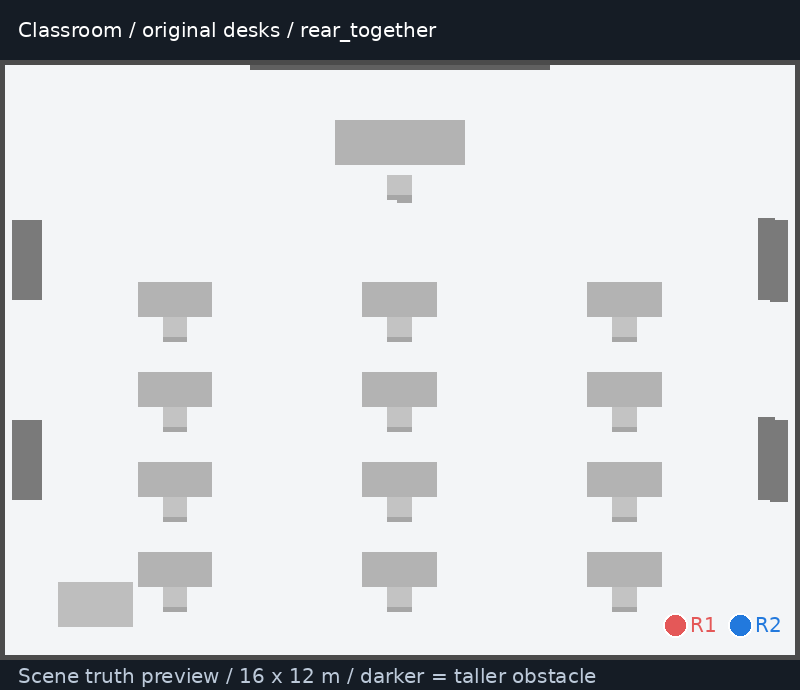
未知减少 96.14% · 剩余 147,799
规划均值 / P95：0.562 / 0.783 s
启动后空闲 R1 / R2：0.00 / 0.00 s
采样最小车距：1.30 m · duration_limit
diagonal
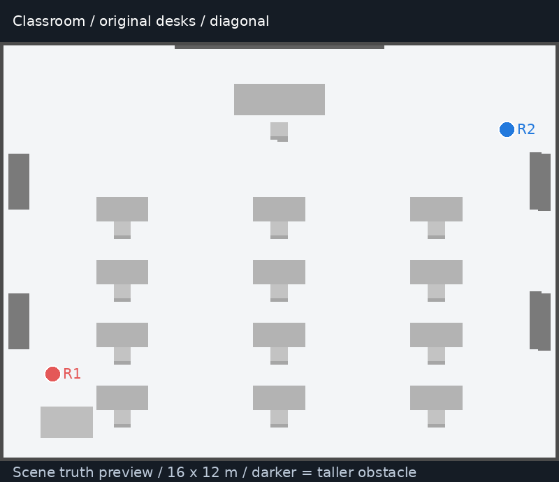
未知减少 95.56% · 剩余 147,223
规划均值 / P95：0.562 / 0.847 s
启动后空闲 R1 / R2：0.00 / 0.00 s
采样最小车距：3.44 m · duration_limit
front_split
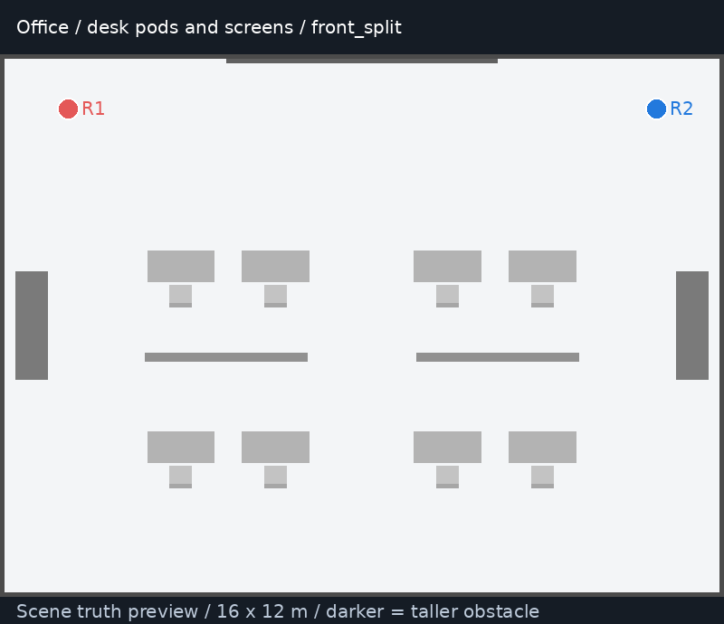
未知减少 95.81% · 剩余 143,288
规划均值 / P95：0.489 / 0.657 s
启动后空闲 R1 / R2：0.00 / 0.00 s
采样最小车距：2.02 m · duration_limit
rear_together
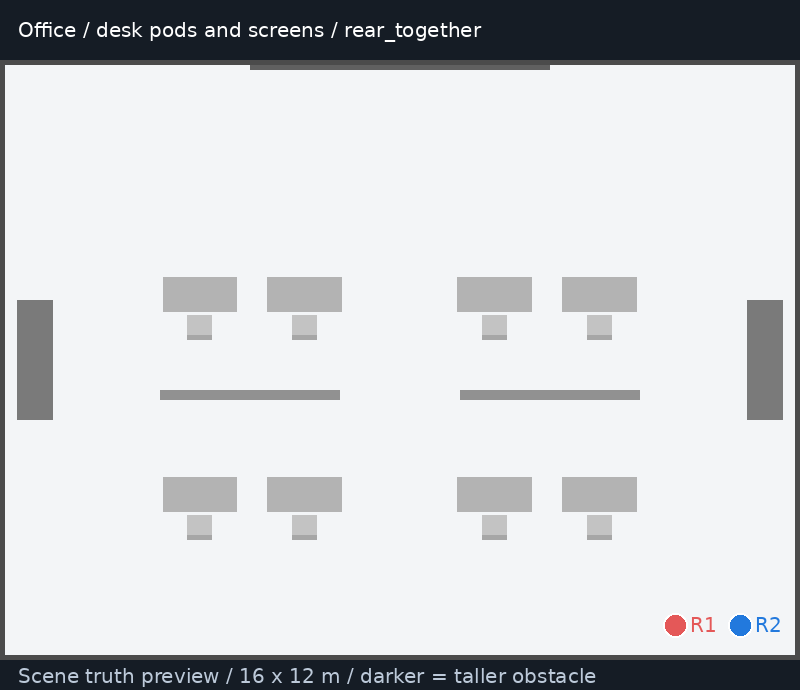
未知减少 96.16% · 剩余 143,613
规划均值 / P95：0.523 / 0.602 s
启动后空闲 R1 / R2：0.00 / 0.00 s
采样最小车距：1.30 m · duration_limit
diagonal
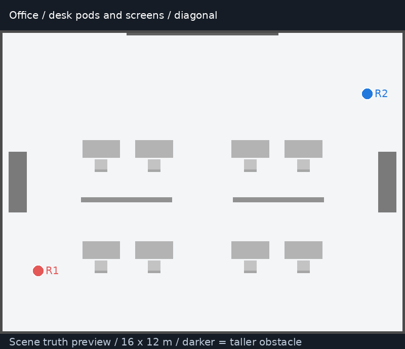
未知减少 95.68% · 剩余 140,285
规划均值 / P95：0.519 / 0.644 s
启动后空闲 R1 / R2：0.00 / 0.00 s
采样最小车距：7.67 m · duration_limit
front_split
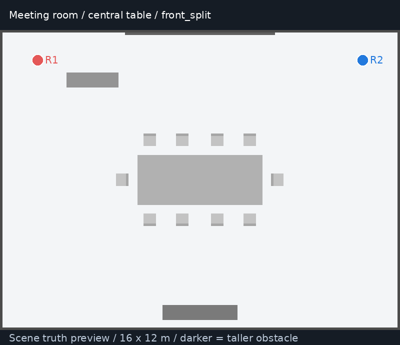
未知减少 96.44% · 剩余 123,888
规划均值 / P95：0.548 / 0.637 s
启动后空闲 R1 / R2：0.00 / 0.00 s
采样最小车距：3.36 m · duration_limit
rear_together
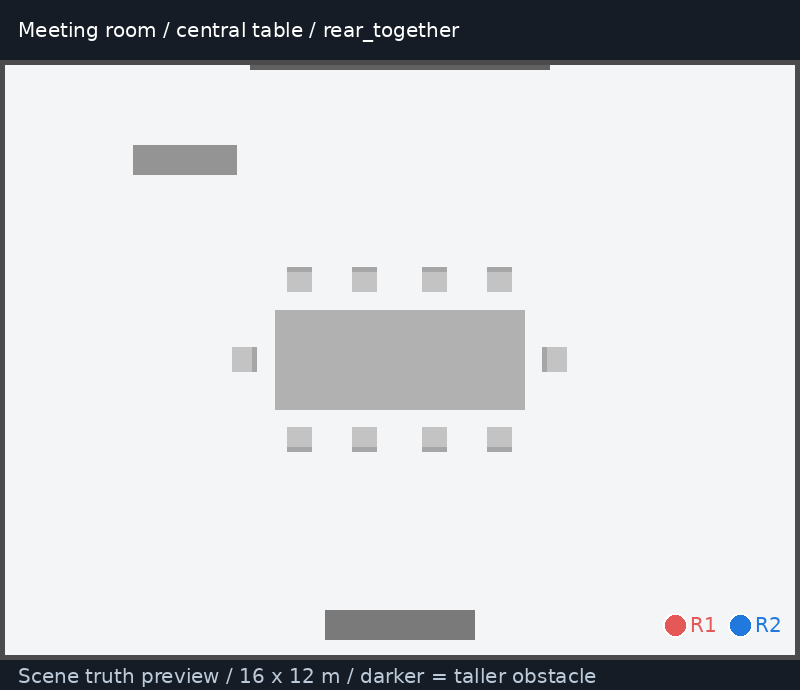
未知减少 96.55% · 剩余 128,214
规划均值 / P95：0.517 / 0.617 s
启动后空闲 R1 / R2：0.00 / 0.00 s
采样最小车距：1.30 m · duration_limit
diagonal
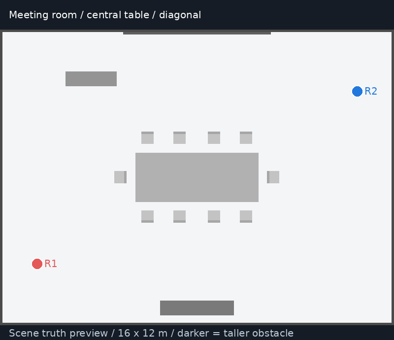
未知减少 95.69% · 剩余 135,780
规划均值 / P95：0.554 / 0.711 s
启动后空闲 R1 / R2：0.00 / 0.00 s
采样最小车距：1.84 m · duration_limit
front_split
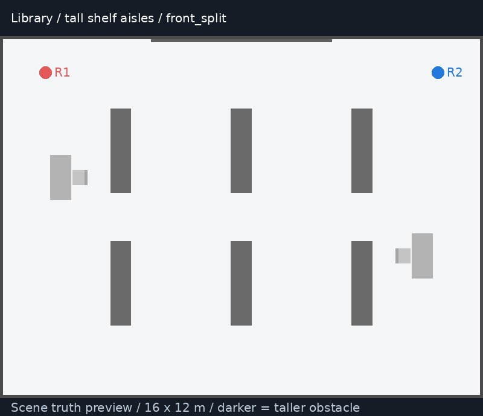
未知减少 93.04% · 剩余 244,677
规划均值 / P95：0.505 / 0.598 s
启动后空闲 R1 / R2：0.00 / 0.00 s
采样最小车距：1.90 m · duration_limit
rear_together
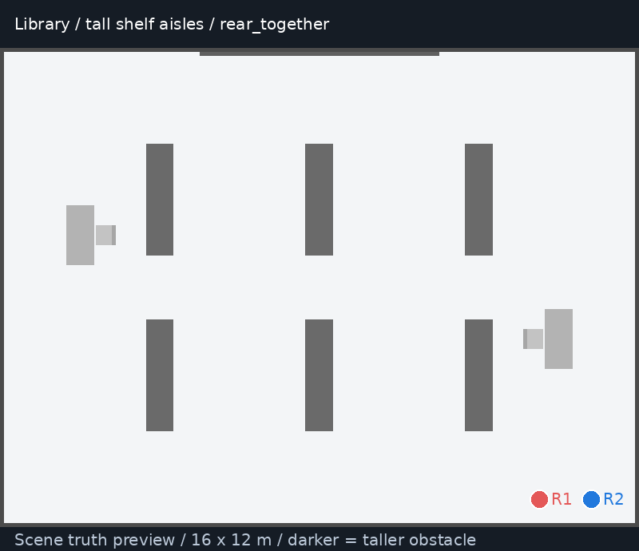
未知减少 93.13% · 剩余 259,611
规划均值 / P95：0.518 / 0.588 s
启动后空闲 R1 / R2：0.00 / 0.00 s
采样最小车距：1.30 m · duration_limit
diagonal
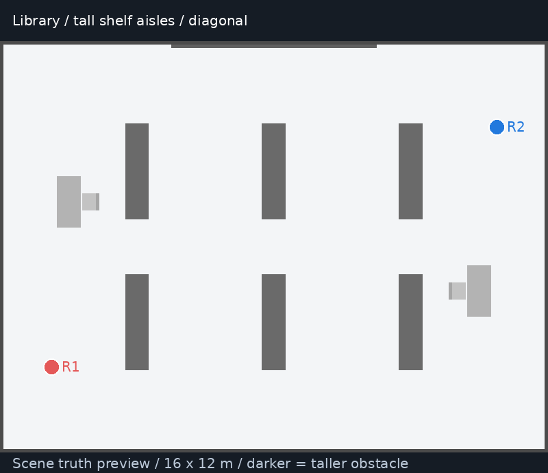
未知减少 92.67% · 剩余 246,497
规划均值 / P95：0.512 / 0.630 s
启动后空闲 R1 / R2：0.00 / 0.00 s
采样最小车距：2.98 m · duration_limit
front_split
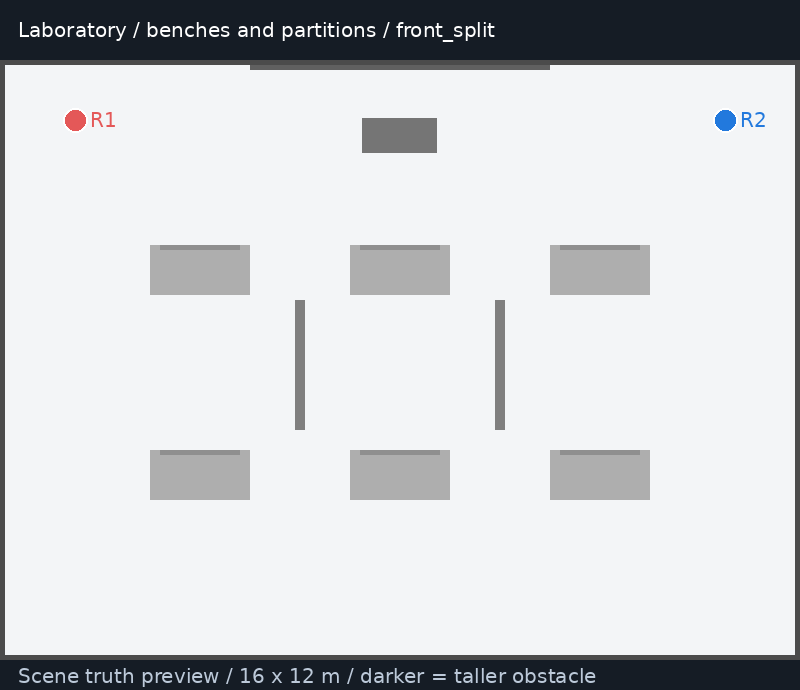
未知减少 94.96% · 剩余 173,335
规划均值 / P95：0.469 / 0.635 s
启动后空闲 R1 / R2：0.00 / 0.00 s
采样最小车距：2.19 m · duration_limit
rear_together
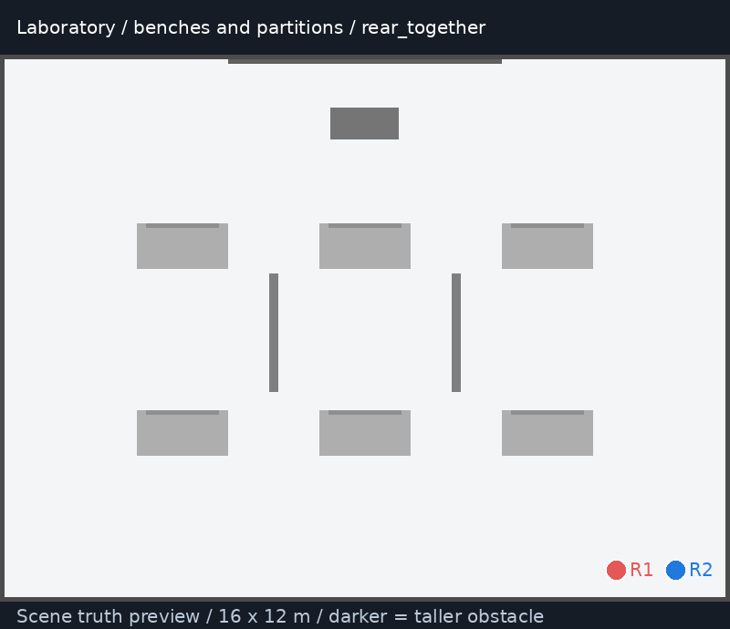
未知减少 95.27% · 剩余 177,108
规划均值 / P95：0.512 / 0.577 s
启动后空闲 R1 / R2：0.00 / 0.00 s
采样最小车距：1.30 m · duration_limit
diagonal
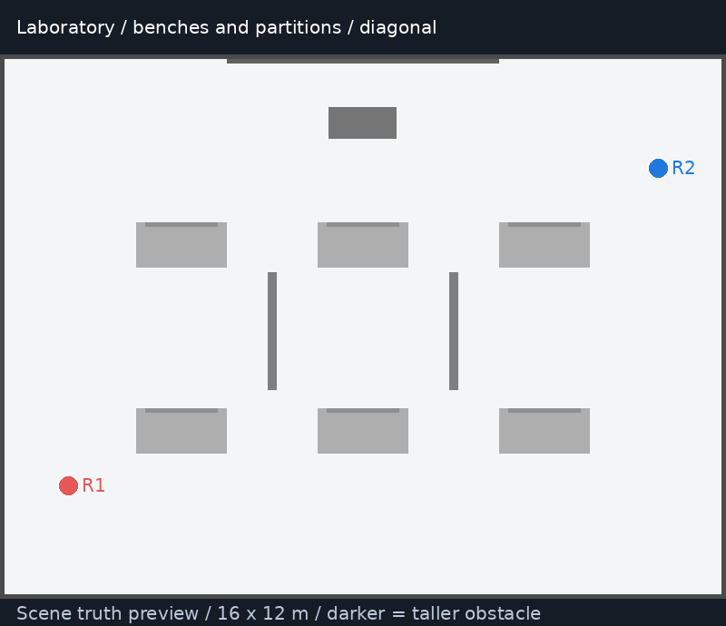
未知减少 94.92% · 剩余 164,820
规划均值 / P95：0.445 / 0.601 s
启动后空闲 R1 / R2：0.00 / 0.00 s
采样最小车距：4.27 m · duration_limit
front_split
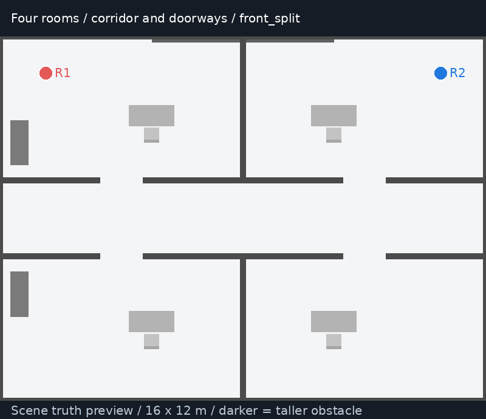
未知减少 94.40% · 剩余 198,243
规划均值 / P95：0.490 / 0.596 s
启动后空闲 R1 / R2：0.00 / 0.00 s
采样最小车距：5.06 m · duration_limit
rear_together
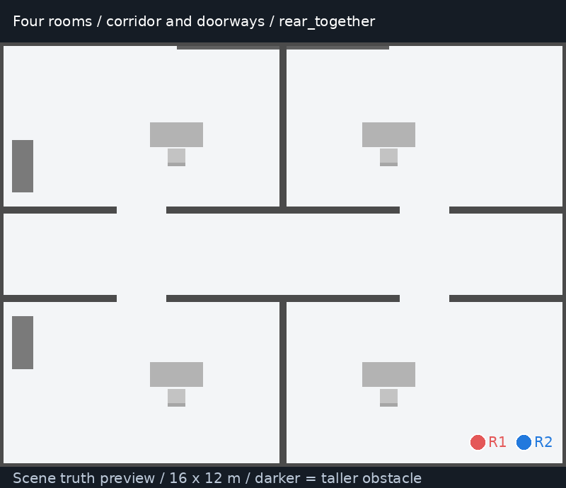
未知减少 91.83% · 剩余 307,418
规划均值 / P95：0.490 / 0.541 s
启动后空闲 R1 / R2：0.00 / 0.00 s
采样最小车距：1.30 m · duration_limit
diagonal
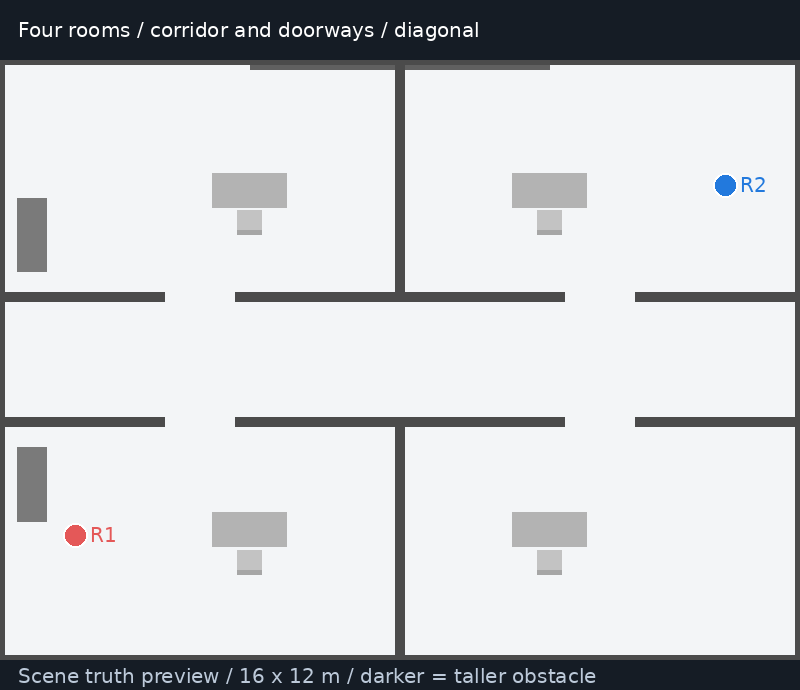
未知减少 94.19% · 剩余 202,065
规划均值 / P95：0.472 / 0.582 s
启动后空闲 R1 / R2：0.00 / 0.00 s
采样最小车距：3.46 m · duration_limit